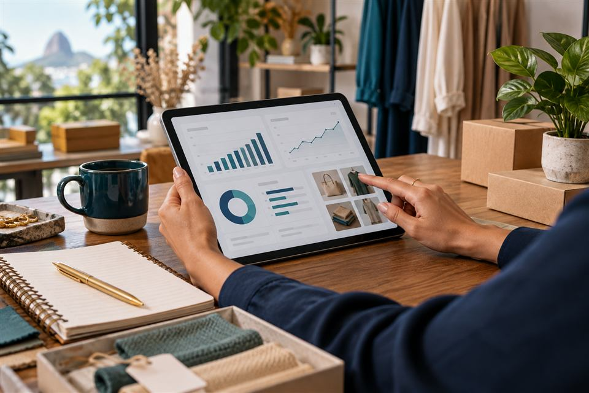

O que fazemos
Serviços
Uma presença digital útil e processos mais organizados começam com escolhas proporcionais ao seu negócio.
Sites que ajudam o cliente a encontrar você
Criamos páginas que explicam o que você oferece, funcionam em diferentes telas e mostram um caminho claro para entrar em contato.
- Conteúdo organizado para perguntas frequentes.
- Navegação simples para celular e computador.
- Informações essenciais fáceis de atualizar.
Exemplo de uso
Uma loja pode reunir produtos, localização, horário e formas de contato em uma vitrine digital.
Veja ideias de sitesAutomação para tarefas recorrentes
Mapeamos etapas repetidas e propomos fluxos que reduzam digitação duplicada, esquecimentos e consultas espalhadas.
- Organização de informações de rotina.
- Lembretes e relatórios conforme a necessidade.
- Revisão humana nos pontos que pedem decisão.

Exemplo de uso
Um comércio pode acompanhar entradas e saídas de produtos e identificar itens próximos da reposição.
Veja ideias de automaçãoFerramentas para acompanhar o trabalho
Quando uma planilha já não mostra tudo com clareza, uma solução digital pode reunir dados e etapas em um lugar acessível.
- Painéis de indicadores relevantes.
- Registro e acompanhamento de solicitações.
- Fluxos adaptados à operação da equipe.
Exemplo de uso
Uma equipe técnica pode manter o histórico de manutenção e acompanhar o status de cada serviço.
Veja ideias digitaisQual processo você gostaria de melhorar?
Descreva sua necessidade para iniciar uma conversa sobre possibilidades.
Descrever meu projeto